|
|
| echinoids text index | photo index |
| Phylum Echinodermata > Class Echinodea |
| Heart
urchins Order Spatangoida updated Apr 2020
Where seen? Living heart urchins are rarely encountered as they usually remain buried in the ground, some as deep as 20cm below the surface. But their dead skeletons are often seen on Pulau Sekudu and sometimes on our other shores. These skeletons (called the test) are fragile. Often only pieces are seen. What are heart urchins? Heart urchins belong to Phylum Echinodermata and Class Echinoidea which includes sea urchins and sand dollars. They got their name because they have a heart-shaped body. They are also sometimes called Sea potatoes, as that is what they resemble too. Heart urchin features: Like other echinoderms, heart urchins have have tube feet and spines. Although they have a five-part symmetry, heart urchins are not strictly symmetrical along five axes (and thus sometimes called irregular echinoids). Heart urchins can be considered oval, burrowing sea urchins. But unlike sea urchins, heart urchins have an obvious 'front' end and 'back' end. |
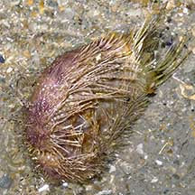 Side view of living heart urchin showing flat underside. Kusu Island, Jul 04 |
Side view |
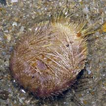 Underside |
| Heart urchins have an internal skeleton (called the test) formed out
of large ossicles (pieces made of calcium carbonate) fused together
into plates in multiples of five. The test is a rigid and hollow without
any internal support. Heart urchins have quite obvious spines, just
like sea urchins. A heart urchin's mouth is on one end of the oval-shaped
body. Its anus is on the opposite end of the body. All heart urchins
lack the specialised Aristotle's lantern jaws that sea urchins have. Breathing petals: The petal design on the upperside of a heart urchin is called a petaloid. In heart urchins, these are usually made up of only 4 instead of 5 'petals'. The fifth petal is more reduced and usually found at the back end of the animal. The petaloid is a series of tiny holes in the skeleton. Tube feet emerge through these holes and the heart urchin breathes through these feet! |
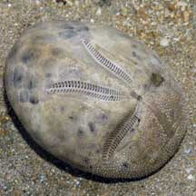 Features are more obvious in a dead heart urchin. This is the upperside. Pulau Sekudu, Dec 03 |
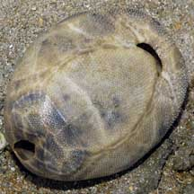 This is the underside with the mouth on the upper right, and anus on the left end. |
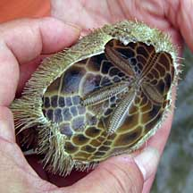 Broken skeleton. Cyrene Reef, Jun 10 |
| Built to burrow: Their shape is an adaptation for burrowing just under the surface. Some may have long spines, others shorter ones. These spines are moveable and specialised to function like spades to dig into the sand or to move around. Heart urchins have a special band of tiny spines (called the fasciole). The fasciole creates circulation of water within the burrow underground, and also produces a sheet of mucus that helps to cement the burrow walls. Some may also have very long tube feet that reach up to maintain an opening to the surface. |
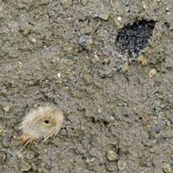 This one seemed to have popped out of the sand, leaving a hole of the same shape. Pulau Semakau, Feb 09 |
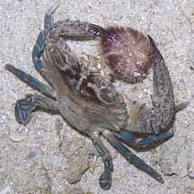 A heart urchin caught by a swimming crab! Terumbu Pempang Laut, May 11 |
| Hearty food: Heart urchins process
the edible bits found in the sand as they burrow. Tube feet near the
mouth are specialised to pick up edible bits. The disc-shaped end
of the tube feet have tiny finger-like projections. These tube feet
are wiped against an internal structure called a raker. Some heart
urchins remain in their burrows and feed on particles that fall down
the burrow shaft. The particles are trapped by a mucous belt that
draws these into the mouth. Heart urchin babies: Heart urchins have separate genders and are usually either male or female. They practice external fertilisation, releasing eggs and sperm simultaneously into the water. Some may brood their young in special sunken parts of their body. Heart urchin undergo metamorphosis and their larvae look nothing like their adults. The form that first hatches from the eggs are bilaterally symmetrical and free-swimming, drifting with the plankton. At this stage, they have several long 'arms' which are believed to funnel food particles into the central mouth. They eventually settle down and develop into a a tiny heart urchin. Heart urchins are preyed upon by Helmet snails (Family Cassidae) which have a gruesome way of capturing and eating the heart urchins. Status and threats: None of our heart urchins are listed among the threatened animals of Singapore. However, like other creatures of the intertidal zone, they are affected by human activities such as reclamation and pollution. Trampling by careless visitors also have an impact on local populations. |
| Some Heart urchins on Singapore shores |
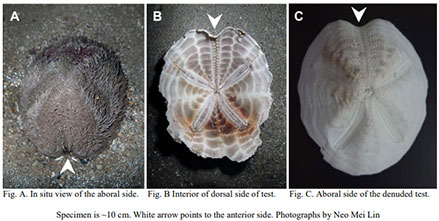 Metalia spatagus From Singapore BIodiversity Records 2020: 16 |
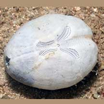 Brissopsis luzonica From Singapore BIodiversity Records 2020: 206 |
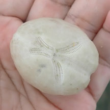 Brissopsis luzonicaEast Coast Park (G), Dec 2022 |
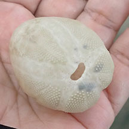 |
| Order
Spatangoida recorded for Singapore from Wee Y.C. and Peter K. L. Ng. 1994. A First Look at Biodiversity in Singapore. *additions from Lane, David J.W. and Didier Vandenspiegel. 2003. A Guide to Sea Stars and Other Echinderms of Singapore. +Other additions (Singapore BIodiversity Record, etc)
|
Links
|